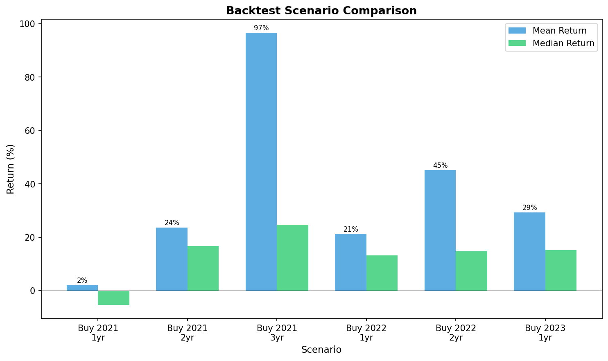
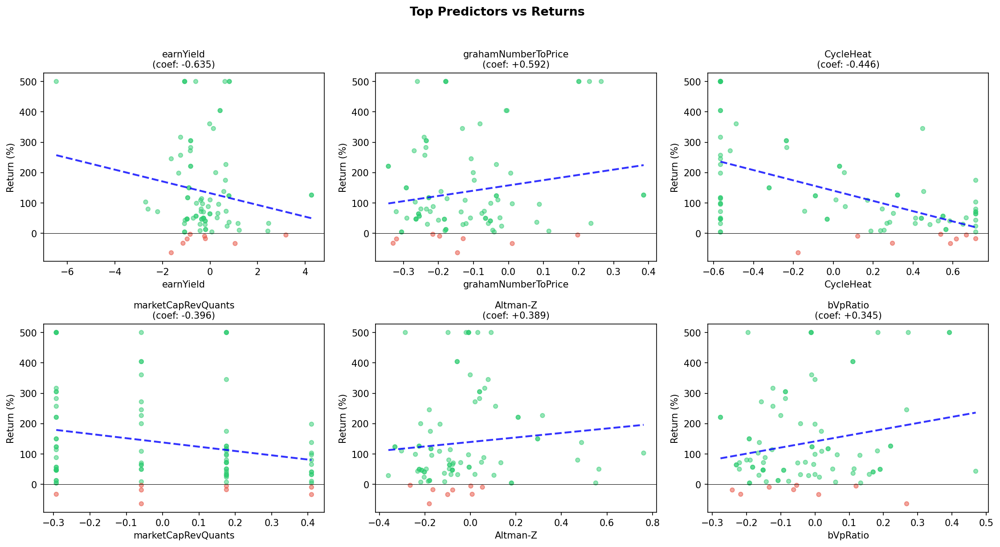
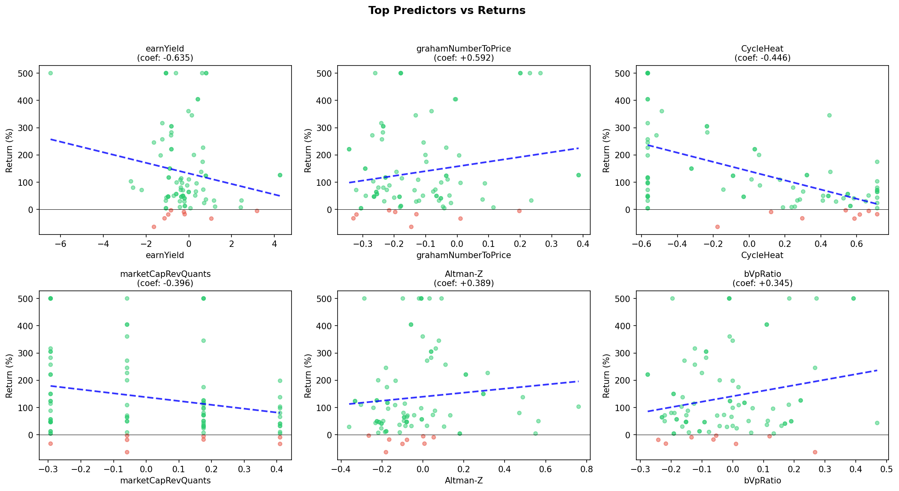

Valuation Analysis Report
Best Mean Return
Best Median Return
Scenarios Tested
Stock Picks (89 stocks)
Stocks ranked by the algorithm. OLS_Score uses empirically-derived coefficients to re-weight metrics based on historical return prediction.
| source | BoScore | AggScore | rankOfRanks | Altman-Z | Piotroski | CycleHeat | moatScore | grahamNumberToPrice | earnYield | returnOnEquity | Original_Rank | OLS_Rank | OLS_Score |
|---|---|---|---|---|---|---|---|---|---|---|---|---|---|
| ENVA | 0.173 | 0.927 | 1.000 | -0.218 | 0.769 | 0.055 | 5 | -0.101 | 0.236 | -0.099 | 1 | 33.000 | 0.357 |
| SLP.L | -0.005 | 0.914 | 0.100 | 0.002 | 0.216 | 0.667 | 5 | 0.197 | 3.188 | 0.117 | 2 | 40.000 | -0.015 |
| GSL-PB | -0.081 | 0.890 | 0.800 | -0.225 | 0.216 | 0.322 | 4 | 0.386 | 4.264 | 0.049 | 3 | 56.500 | -0.527 |
| GSL | -0.081 | 0.890 | 0.800 | -0.225 | 0.216 | 0.322 | 4 | 0.386 | 4.264 | 0.049 | 4 | 56.500 | -0.527 |
| CFX.L | 0.200 | 0.599 | 0.700 | -0.185 | 0.769 | 0.255 | 3 | -0.045 | 1.227 | 0.089 | 5 | 60.000 | -0.750 |
| CAPD.L | -0.092 | 0.568 | 0.400 | -0.218 | -0.338 | 0.189 | 3 | 0.115 | 2.429 | 0.042 | 6 | 68.000 | -0.957 |
| SYF | -0.089 | 0.530 | 2.900 | -0.331 | 1.323 | -0.090 | 6 | -0.035 | 0.793 | -0.066 | 7 | 30.500 | 0.455 |
| SYF-PA | -0.089 | 0.530 | 2.900 | -0.331 | 1.323 | -0.090 | 6 | -0.035 | 0.793 | -0.066 | 8 | 30.500 | 0.455 |
| RFX.L | 0.009 | 0.431 | 0.200 | -0.085 | 0.216 | 0.411 | 5 | -0.058 | 1.176 | 0.004 | 9 | 74.000 | -1.032 |
| AEP.L | 0.070 | 0.402 | 0.300 | 0.020 | 0.769 | 0.269 | 3 | 0.235 | 2.462 | -0.034 | 10 | 34.000 | 0.289 |
| MPE.L | -0.067 | 0.163 | 0.900 | 0.049 | -0.338 | -0.144 | 3 | -0.069 | 0.676 | -0.061 | 11 | 48.000 | -0.272 |
| PRU.TO | 0.187 | 0.162 | 0.500 | 0.317 | -1.445 | -0.565 | 4 | -0.035 | 0.665 | 0.008 | 12 | 9.000 | 1.803 |
| CDFF.L | 0.006 | 0.147 | 0.600 | 0.551 | -0.891 | 0.714 | 6 | -0.041 | 0.076 | -0.207 | 13 | 54.000 | -0.467 |
| HSM.L | -0.094 | 0.140 | 1.200 | -0.100 | 0.769 | 0.587 | 4 | 0.011 | 1.052 | -0.008 | 14 | 78.000 | -1.204 |
| RRBI | -0.090 | 0.138 | 2.300 | -0.360 | 0.769 | 0.485 | 5 | -0.130 | -0.207 | -0.174 | 15 | 86.000 | -1.528 |
| NEXN | 0.066 | 0.102 | 2.600 | -0.231 | -0.891 | 0.714 | 4 | -0.200 | -1.050 | -0.286 | 16 | 55.000 | -0.505 |
| M12.DE | 0.041 | 0.095 | 2.400 | -0.042 | 0.769 | -0.565 | 2 | -0.224 | -0.376 | -0.056 | 17 | 37.000 | 0.133 |
| 0HQ7.L | -0.078 | 0.094 | 2.200 | -0.091 | 0.769 | 0.714 | 4 | -0.257 | -0.006 | 0.345 | 18 | 72.500 | -1.025 |
| BKE | -0.078 | 0.094 | 2.200 | -0.091 | 0.769 | 0.714 | 4 | -0.257 | -0.006 | 0.345 | 19 | 72.500 | -1.025 |
| GFM.L | -0.055 | 0.085 | 1.300 | 0.078 | -0.338 | 0.448 | 3 | -0.132 | 0.141 | -0.143 | 20 | 61.000 | -0.754 |
Showing top 20 of 89 stocks. Full list in data/stock_picks.csv
OLS-Weighted Re-Ranking
Stocks re-ranked using OLS coefficients as weights. This prioritizes stocks with metrics that historically predicted better returns.
| source | OLS_Rank | AggScore | OLS_Score |
|---|---|---|---|
| HRTG | 1.000 | -0.624 | 3.143 |
| MSA.TO | 2.000 | -0.146 | 2.973 |
| SRB.L | 3.000 | 0.030 | 2.654 |
| SBI.TO | 4.000 | 0.028 | 2.650 |
| KIN2.DE | 5.000 | -1.157 | 2.237 |
| KGC | 6.000 | -0.586 | 1.975 |
| K.TO | 7.000 | -0.600 | 1.928 |
| 0VL5.L | 8.000 | -0.414 | 1.809 |
| PRU.TO | 9.000 | 0.162 | 1.803 |
| TXG.TO | 10.000 | -0.417 | 1.774 |
| 0R4M.L | 11.000 | -0.136 | 1.344 |
| ELD.TO | 12.000 | -0.872 | 1.295 |
| EGO | 13.000 | -0.777 | 1.212 |
| 0JT5.L | 14.000 | -0.241 | 1.103 |
| LRCX | 15.000 | -0.241 | 1.103 |
Backtest Results
Scenario Summary
| buy_year | eval_years | n_stocks | mean_return | median_return | std_return | positive_pct | min_return | max_return |
|---|---|---|---|---|---|---|---|---|
| 2021 | 1 | 100 | 2.1% | -5.3% | 35.1% | 39% | -57.4% | 116.3% |
| 2021 | 2 | 99 | 23.7% | 16.7% | 79.8% | 67% | -68.2% | 697.8% |
| 2021 | 3 | 100 | 96.6% | 24.8% | 478.8% | 69% | -58.6% | 3536.9% |
| 2022 | 1 | 99 | 21.3% | 13.2% | 42.5% | 72% | -68.8% | 290.3% |
| 2022 | 2 | 100 | 45.1% | 14.8% | 167.5% | 63% | -68.1% | 1565.4% |
| 2023 | 1 | 99 | 29.4% | 15.2% | 59.1% | 67% | -40.9% | 329.3% |
Scenario Comparison
Ranking Cohort Analysis
This analysis validates the ranking algorithm by comparing returns across different percentile groups. If the algorithm works, better-ranked stocks should have higher returns.
Top 1% vs Bottom 50%
Monotonic Improvement
Avg Marginal Improvement
Returns by Cohort
| cohort | n_stocks | rank_range | mean_return | median_return | std_return | positive_pct | min_return | max_return |
|---|---|---|---|---|---|---|---|---|
| Bottom 50% | 4277 | 4277-8553 | 53272.3% | 18.8% | 2271218.7% | 62% | -100.0% | 131786956.0% |
| Top 50-25% | 2138 | 2139-4276 | 44213.7% | 19.0% | 1778092.3% | 61% | -100.0% | 81654721.5% |
| Top 25-10% | 1283 | 856-2138 | 433.7% | 10.9% | 7013.2% | 56% | -100.0% | 228133.4% |
| Top 10-5% | 428 | 428-855 | 100884.3% | 4.1% | 1484989.3% | 51% | -100.0% | 28207884.2% |
| Top 5-1% | 342 | 86-427 | 360.8% | 6.8% | 4736.4% | 54% | -100.0% | 86435.7% |
| Top 1% | 85 | 1-85 | 9.7% | -15.1% | 91.8% | 45% | -99.7% | 366.0% |
Return Ratio Matrix
Each cell shows: row cohort median / column cohort median. Values >1 mean the row outperforms the column.
| Bottom 50% | Top 50-25% | Top 25-10% | Top 10-5% | Top 5-1% | Top 1% | |
|---|---|---|---|---|---|---|
| Bottom 50% | 1.00 | 0.99 | 1.72 | 4.59 | 2.75 | -1.24 |
| Top 50-25% | 1.01 | 1.00 | 1.74 | 4.65 | 2.78 | -1.26 |
| Top 25-10% | 0.58 | 0.57 | 1.00 | 2.68 | 1.60 | -0.73 |
| Top 10-5% | 0.22 | 0.21 | 0.37 | 1.00 | 0.60 | -0.27 |
| Top 5-1% | 0.36 | 0.36 | 0.63 | 1.67 | 1.00 | -0.45 |
| Top 1% | -0.80 | -0.79 | -1.38 | -3.69 | -2.21 | 1.00 |
Winners vs Losers Analysis
Comparing metrics between stocks that had positive returns (winners) vs negative returns (losers). This reveals which metrics differentiate success from failure.
Winners
Median: 57.4%
Losers
Median: -42.9%
Win Rate
Metrics That Differentiate Winners from Losers
Effect Size (Cohen's d): >0.2 small, >0.5 medium, >0.8 large. Positive = winners have higher values.
| Metric | Winner Median | Loser Median | Effect Size |
|---|---|---|---|
| returnOnAssets | 0.0056 | -0.0015 | +0.104 |
| capitalExpenditureCoverageRatio | -3.7494 | -2.2278 | -0.074 |
| dReturnOnAssets | -0.0001 | -0.0033 | +0.063 |
| mEquityToAssets | 0.3930 | 0.4843 | -0.057 |
| dNetIncomePerShare | 0.0008 | -0.0127 | -0.053 |
| dEPS | 0.0008 | -0.0127 | -0.053 |
| mPbRatio | 1.4978 | 1.8911 | -0.052 |
| grahamNetNet | -11.0836 | -1.7100 | +0.049 |
| dPbRatio | 0.0305 | 0.0129 | -0.045 |
| dSharesOutstanding | 0.0000 | 3000.0000 | -0.040 |
| CFO | 43060000.0000 | 2348500.0000 | +0.037 |
| dSalesToInventory | 0.0223 | 0.0000 | -0.036 |
| returnOnEquity | -0.0050 | -0.0296 | +0.035 |
| mPfcfRatio | 15.6314 | -1.5384 | +0.034 |
| uNetDebtToEBITDA | 3.9404 | 2.4564 | +0.030 |
What Predicts Losses? (OLS on Losers Only)
R-squared: 0.0504
Samples: 3,434 losing stocks
Negative coefficients = higher values led to worse (more negative) returns among losers.
| metric | coefficient |
|---|---|
| returnOnAssets | +0.2090 |
| dReturnOnAssets | -0.1878 |
| dSalesToAssets | -0.1694 |
| dFreeCashFlowToEquity | -0.1150 |
| dReturnOnCapitalEmployed | +0.1116 |
| dPbRatio | +0.1068 |
| mPbRatio | -0.1049 |
| dGrossProfitToAssets | -0.0773 |
| mNetProfitMargin | +0.0574 |
| dReturnOnTangibleAssets | +0.0450 |
OLS Analysis: All Stocks
R-squared: 0.0000
Samples: 0
Buy Year: 2022
OLS Analysis: Top 100 PostRank Stocks
R-squared: 0.5990
Samples: 89
PostRank Metric Coefficients
| metric | coefficient |
|---|---|
| earnYield | -0.6345 |
| grahamNumberToPrice | +0.5923 |
| CycleHeat | -0.4462 |
| marketCapRevQuants | -0.3957 |
| Altman-Z | +0.3890 |
| bVpRatio | +0.3449 |
| returnOnEquity | +0.2590 |
| returnOnCapitalEmployed | +0.2455 |
| RoA | -0.2375 |
| moatScore | +0.2081 |
| DcfToPrice | -0.1573 |
| BoScore | +0.1570 |
| grossProfitMargin | -0.1526 |
| incomeQuality | -0.1283 |
| Piotroski | +0.1266 |
| EPStoEPSmean | +0.1210 |
| revenueGrowth | +0.1193 |
| priceGrowth | -0.1137 |
| freeCashFlowYield | +0.0887 |
| currentRatio | -0.0299 |
| freeCashFlowPerShareGrowth | -0.0279 |
| tbVpRatio | -0.0077 |
 
